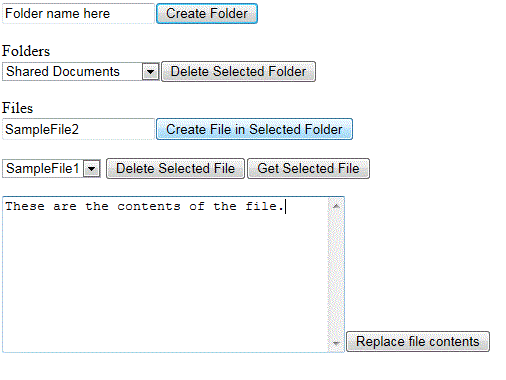

Description of the sample
The code that uses the REST APIs is located in the Files.js file of the FilesSampleWeb project. The following screen shot shows how the Files.html page of the app appears after you install and launch the app.
Figure 1. Files.html page in the app, which displays the controls for viewing and creating document library folders and files
The sample demonstrates the following:
-
How to read and write data to and from a host web by making REST calls with the cross-domain library.
-
How to retrieve folders and files from the REST endpoints where they are exposed and how to perform Create and Update operations on them.
For more information:
Prerequisites
This sample requires the following:
-
An Office 365 Developer Site
-
Visual Studio 2012 and SharePoint development tools in Visual Studio 2012 installed on your developer computer
-
Basic familiarity with RESTful web services
Key components of the sample
This sample app that shows how to perform basic data operations by using REST contains the following:
-
FilesSample project, which contains an empty SharePoint-hosted app. This is required for the cross-domain library to work.
-
FilesSampleWeb project, which contains the following:
-
Files.html file, which contains the HTML for the app's user interface.
-
Files.js file, which contains the JavaScript code that uses the REST APIs to read and write data.
-
web.config file.
-
Configure the sample
To configure the basic data operations sample app, update the SiteUrl property of the solution with the URL of the home page of your Office 365 Developer Site.
Run and test the sample
-
Press the F5 key to build and deploy the app.
-
Choose Trust It on the consent page to grant permissions to the app.
-
Use the app's interface to read, create, and update lists and add list items on the parent SharePoint 2013 site.
Examples
The following figure shows an example of how to use this app for SharePoint to add a file to a folder.
Figure 2. Add a file to a folder

Troubleshooting
The following table lists common configuration and environment errors that prevent the sample from running or deploying properly and how you can solve them.
|
Problem
|
Solution
|
|---|---|
|
Visual Studio does not open the browser after you press the F5 key.
|
Set the app for SharePoint project as the startup project.
|
|
HTTP error 405 Method not allowed.
|
Locate the applicationhost.config file in %userprofile%\Documents\IISExpress\config.
Locate the handler entry for StaticFile, and add the verbs
GET, HEAD,
POST, DEBUG, and
TRACE.
|
|
An attempt to delete a folder does not work.
|
This likely happens because the folder is used internally and cannot be deleted.
|
Change log
|
Version
|
Date
|
|---|---|
|
First version
|
October 30, 2012
|